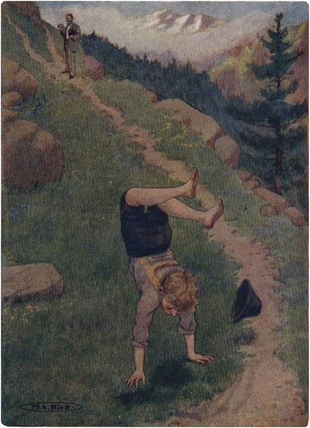

SEORANG TAMU DI ALP

Fajar menyingsing mewarnai pegunungan dan angin pagi yang segar menggoyangkan pohon-pohon cemara tua ke sana kemari . Heidi membuka matanya, karena desiran angin telah membangunkannya. Suara-suara ini selalu menggetarkan hatinya, dan sekarang suara itu menariknya keluar dari tempat tidur. Bangkit dengan tergesa-gesa, ia segera berpakaian rapi dan menyisir rambutnya.
Setelah menuruni tangga kecil dan mendapati tempat tidur kakek kosong, dia berlari keluar. Lelaki tua itu sedang memandang langit untuk melihat bagaimana cuaca hari itu. Awan-awan merah muda melintas di atas kepala, tetapi perlahan-lahan langit menjadi lebih biru dan gelap, dan tak lama kemudian cahaya keemasan menyinari ketinggian, karena matahari terbit dengan segala kemegahannya.
"Oh, betapa indahnya! Selamat pagi, kakek," seru Heidi.
"Apakah matamu sudah berbinar-binar?" balas kakek itu sambil mengulurkan tangannya.
Heidi kemudian berlari ke pohon cemara kesayangannya dan menari-nari di sekitarnya, sementara angin menderu di dahan-dahannya.
Setelah lelaki tua itu memandikan dan memerah susu kambing-kambingnya, ia membawa mereka keluar dari kandang. Ketika Heidi melihat teman-temannya lagi, ia membelai mereka dengan lembut, dan mereka pun hampir menghimpitnya di antara mereka. Terkadang ketika Bärli terlalu liar, Heidi akan berkata: "Tapi Bärli , kau mendorongku seperti orang Turki Besar," dan itu sudah cukup untuk menenangkan kambing itu.
Tak lama kemudian Peter tiba bersama seluruh kawanan, Thistlefinch yang riang berada di depan yang lain. Heidi, yang segera berada di tengah-tengah mereka, terdorong-dorong di antara mereka. Peter ingin sekali berbicara kepada gadis kecil itu, jadi dia bersiul melengking, mendesak kambing-kambing itu untuk maju. Ketika dia sudah dekat dengannya, dia berkata dengan nada mencela: "Kau benar-benar bisa ikut denganku hari ini!"
"Tidak, aku tidak bisa, Peter," kata Heidi. "Mereka bisa datang dari Frankfurt kapan saja. Aku harus berada di rumah saat mereka datang."
"Kau sudah sering sekali mengatakan itu," gerutu bocah itu.
"Tapi aku serius," jawab Heidi. "Apa kau benar-benar berpikir aku ingin pergi saat mereka datang dari Frankfurt? Apa kau benar-benar berpikir begitu, Peter?"
"Mereka bisa datang ke paman," geram Peter.
Kemudian terdengar suara kakek yang lantang: "Mengapa pasukan tidak maju? Apakah ini kesalahan panglima perang, atau kesalahan pasukan?"
Peter segera berbalik dan menggiring kambing-kambingnya mendaki gunung tanpa basa-basi lagi.
Sejak Heidi kembali ke rumah kakeknya, dia melakukan banyak hal yang sebelumnya tidak pernah terpikirkan olehnya. Misalnya, dia akan merapikan tempat tidurnya setiap pagi, dan berlarian di sekitar gubuk, membersihkan dan menyapu debu. Dengan kain lap tua, dia akan menggosok kursi dan meja sampai semuanya berkilau, dan kakeknya akan berseru: "Sekarang selalu hari Minggu di rumah kita; Heidi tidak pergi dengan sia-sia."
Pada hari itu setelah sarapan, ketika Heidi memulai tugas yang ia tetapkan sendiri, ia membutuhkan waktu lebih lama dari biasanya, karena cuaca terlalu cerah untuk tetap berada di dalam rumah. Berulang kali sinar matahari yang terang menggoda anak yang aktif itu untuk keluar. Bagaimana mungkin ia tetap di dalam rumah, ketika sinar matahari yang berkilauan menyinari dan semua gunung tampak bercahaya? Ia harus duduk di tanah yang kering dan keras dan memandang ke lembah dan sekelilingnya. Kemudian, tiba-tiba teringat akan tugas-tugas kecilnya, ia akan bergegas kembali. Namun, tidak lama kemudian, pohon-pohon cemara yang bergemuruh kembali menggodanya. Kakeknya sibuk di toko kecilnya, hanya sesekali melirik anak itu. Tiba-tiba ia mendengar panggilannya: "Oh kakek, kemarilah!"
Dia ketakutan dan segera keluar. Dia melihatnya berlari menuruni bukit sambil menangis: "Mereka datang, mereka datang. Oh, dokter datang duluan."

MEREKA AKAN DATANG, OH, DOKTER AKAN DATANG LEBIH DULU ToList
Ketika Heidi akhirnya sampai di tempat teman lamanya, pria itu mengulurkan tangannya, yang segera digenggam Heidi. Dengan penuh sukacita di hatinya, ia berseru: "Apa kabar, dokter? Dan saya berterima kasih seribu kali!"
"Apa kabar, Heidi? Tapi untuk apa kau sudah berterima kasih padaku?" tanya dokter itu sambil tersenyum.
"Karena Ibu mengizinkan saya pulang lagi," jelas anak itu.
Wajah pria itu berseri-seri seperti sinar matahari. Ia tentu tidak menyangka akan mendapat sambutan seperti itu di Pegunungan Alpen. Sebaliknya! Tanpa memperhatikan semua keindahan di sekitarnya, ia mendaki dengan sedih, karena ia yakin Heidi mungkin tidak akan mengenalnya lagi . Ia berpikir bahwa ia tidak akan diterima dengan baik, karena terpaksa akan mengecewakannya. Namun, ia melihat mata Heidi yang cerah menatapnya dengan rasa terima kasih dan cinta. Heidi masih memegang lengannya ketika ia berkata: "Ayo, Heidi, dan antarkan aku ke kakekmu, karena aku ingin melihat di mana kau tinggal."
Seperti seorang ayah yang baik hati, dia menggenggam tangan Heidi, tetapi Heidi tetap berdiri diam dan memandang ke bawah lereng gunung.
"Tapi di mana Clara dan nenek?" tanyanya.
"Nak, sekarang aku harus memberitahumu sesuatu yang akan membuatmu sedih sama seperti aku," jawab dokter itu. "Aku harus datang sendirian, karena Clara sakit parah dan tidak bisa bepergian. Tentu saja nenek juga tidak datang; tetapi musim semi akan segera tiba, dan ketika hari-hari menjadi panjang dan hangat, mereka pasti akan mengunjungimu."
Heidi benar-benar tercengang; dia tidak mengerti bagaimana semua hal yang telah dia bayangkan dengan begitu jelas ternyata tidak akan terjadi. Dia berdiri tanpa bergerak, bingung karena pukulan itu.
Beberapa saat kemudian, Heidi baru ingat bahwa ia memang datang untuk menemui dokter. Menatap temannya, ia terkejut melihat wajahnya yang sedih dan murung. Betapa berubahnya dia sejak terakhir kali ia bertemu! Ia tidak suka melihat orang tidak bahagia, apalagi dokter yang baik dan ramah itu. Pasti dokter itu sedih karena Clara dan nenek tidak datang, dan untuk menghiburnya, Heidi berkata: "Oh, tidak akan lama lagi sampai musim semi tiba; mereka pasti akan datang; mereka akan bisa tinggal lebih lama, dan itu akan menyenangkan Clara. Sekarang kita akan pergi menemui kakek."
Bergandengan tangan, ia mendaki bersama teman lamanya. Sepanjang jalan ia berusaha menghiburnya dengan berulang kali menceritakan tentang hari-hari musim panas yang akan datang. Setelah mereka sampai di pondok, ia memanggil kakeknya dengan gembira:
"Mereka belum sampai di sini, tapi tidak akan lama lagi mereka akan datang!"
Kakek itu menyambut tamunya dengan hangat, yang sama sekali tidak tampak seperti orang asing, karena bukankah Heidi telah menceritakan banyak hal tentang dokter itu kepadanya? Mereka bertiga duduk di bangku di depan pintu, dan dokter itu menjelaskan tujuan kunjungannya. Ia berbisik kepada anak itu bahwa sesuatu akan segera datang dari gunung yang akan memberinya lebih banyak kesenangan daripada kunjungannya. Apakah itu?
Sang paman menyarankan dokter untuk menghabiskan hari-hari musim gugur yang indah di Pegunungan Alpen, jika memungkinkan, dan menyewa kamar kecil di desa daripada di Ragatz; dengan begitu ia bisa dengan mudah berjalan kaki setiap hari ke pondok, dan dari sana sang paman bisa membawanya berkeliling pegunungan. Rencana ini diterima.
Matahari berada di puncaknya dan angin telah berhenti. Hanya semilir angin lembut yang menyegarkan pipi semua orang.
Sang paman kemudian bangkit dan masuk ke dalam gubuk, lalu segera kembali dengan sebuah meja dan makan malam mereka.
"Masuklah, Heidi, dan siapkan meja di sini. Kuharap kau memaklumi hidangan sederhana kami," katanya, sambil menoleh ke tamunya.
"Saya akan dengan senang hati menerima undangan yang menyenangkan ini; saya yakin makan malam di sini akan terasa lezat," kata tamu itu, sambil memandang ke bawah ke lembah yang bermandikan sinar matahari.
Heidi berlarian ke sana kemari , karena ia sangat senang bisa melayani pelindungnya yang baik hati. Tak lama kemudian, pamannya muncul dengan susu panas, keju panggang, dan daging iris tipis berwarna merah muda yang telah dikeringkan di udara bersih. Dokter menikmati makan malamnya lebih nikmat daripada makanan apa pun yang pernah ia cicipi.
"Ya, kita harus mengirim Clara ke sini. Betapa dia bisa mengumpulkan kekuatan!" katanya; "Jika dia memiliki nafsu makan seperti saya hari ini, dia pasti akan menjadi gemuk."
Pada saat itu, terlihat seorang pria berjalan mendekat dengan karung besar di pundaknya. Sesampainya di atas, ia melemparkan muatannya ke bawah, menghirup udara segar yang murni.
Sambil membuka sampulnya, dokter itu berkata: "Ini dikirim untukmu dari Frankfurt, Heidi. Mari lihat apa isinya."
Heidi dengan malu-malu memperhatikan tumpukan itu, dan baru ketika pria itu membuka kotak berisi kue untuk nenek, dia berkata dengan gembira: "Oh, sekarang nenek bisa makan kue yang enak ini." Dia mengambil kotak dan selendang indah di lengannya dan hendak berlari untuk mengantarkan hadiah, ketika para pria membujuknya untuk tinggal dan membongkar sisanya. Betapa senangnya dia menemukan tembakau dan semua barang lainnya. Para pria sedang mengobrol, ketika anak itu tiba-tiba duduk di depan mereka dan berkata: "Barang-barang ini tidak memberi saya kesenangan sebanyak kedatangan dokter tersayang." Kedua pria itu tersenyum.
Saat menjelang matahari terbenam, dokter bangkit untuk mulai turun. Kakek, membawa kotak, selendang, dan sosis, dan tamu yang menggandeng tangan gadis kecil itu, mereka berjalan menuruni lereng gunung. Ketika mereka sampai di gubuk Peter, Heidi disuruh masuk dan menunggu kakeknya di sana. Saat berpisah, dia bertanya: "Apakah Anda mau ikut saya ke padang rumput besok, dokter?"
"Dengan senang hati. Selamat tinggal, Heidi," jawabnya. Kakek telah meletakkan semua hadiah di depan pintu, dan Heidi membutuhkan waktu lama untuk membawa masuk kotak besar dan sosis itu. Selendang itu diletakkannya di pangkuan nenek.
Brigida diam-diam menyaksikan kejadian itu, dan tak kuasa membuka matanya lebar-lebar ketika melihat sosis raksasa itu. Seumur hidupnya ia belum pernah melihat yang seperti itu, dan sekarang ia benar-benar memilikinya dan bisa memotongnya sendiri.
"Oh nenek, bukankah kue-kue ini sangat enak? Lihat betapa lembutnya!" seru anak itu. Betapa terkejutnya dia ketika melihat neneknya lebih senang dengan selendang yang akan menghangatkan tubuhnya di musim dingin.
"Nenek, Clara yang mengirimkan itu untukmu," kata Heidi.
"Oh, betapa baiknya orang-orang itu yang memikirkan wanita tua miskin seperti saya! Saya tidak pernah menyangka akan memiliki selendang seindah ini."
Pada saat itu Peter masuk dengan terhuyung-huyung.
"Paman datang dari belakangku, dan Heidi harus—" hanya sampai di situ ucapannya, karena matanya tertuju pada sosis. Namun, Heidi sudah mengucapkan selamat tinggal, karena dia tahu apa maksudnya. Meskipun pamannya tidak pernah lagi melewati gubuk tanpa mampir, dia tahu hari ini sudah terlambat. "Heidi, ayo, kau harus tidur," panggilnya melalui pintu yang terbuka. Mengucapkan selamat malam kepada mereka semua, dia menggandeng tangan Heidi dan di bawah bintang-bintang yang berkilauan mereka berjalan pulang ke pondok mereka yang damai.
